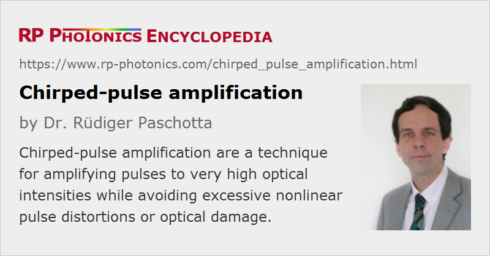

Chirped-pulse Amplification
Acronym: CPA
Definition: a technique for amplifying pulses to very high optical intensities while avoiding excessive nonlinear pulse distortions or optical damage
German: Verstärkung gechirpter Pulse
Categories: light pulses, methods
How to cite the article; suggest additional literature
Author: Dr. Rüdiger Paschotta
In amplifiers for ultrashort optical pulses, the optical peak intensities that occur can become very high, so that detrimental nonlinear pulse distortion or even destruction of the gain medium or of some other optical element may occur. This can be effectively prevented by employing the method of chirped-pulse amplification (CPA), which was originally developed in the context of radar technology, but later applied to optical amplifiers [4]:
Before passing through the amplifier medium, the pulses are chirped and temporally stretched to a much longer duration by means of a strongly dispersive element (the pulse stretcher, e.g. a grating pair or a long fiber). This reduces the peak power to a level where the above-mentioned detrimental effects in the gain medium are avoided. After the gain medium, a dispersive compressor is used, i.e., an element with opposite dispersion (typically a grating pair), which removes the chirp and temporally compresses the pulses to a duration similar to the input pulse duration. As the peak power becomes very high at the compressor, the beam diameter on the compressor grating has to be large. For the most powerful devices, a beam diameter of the order of 1 m is required.
From Gigawatts to Terawatts and Petawatts
The method of chirped-pulse amplification has allowed the construction of table-top amplifiers which can generate pulses with millijoule energies and femtosecond durations, leading to peak powers of several terawatts. (1 TW = 1012 W, corresponding to the electric output of 1000 large nuclear power stations). For the highest peak powers in ultrashort pulses, amplifier systems consisting of several regenerative and/or multipass amplifiers are used, which are mostly based on titanium–sapphire crystals. Such amplifiers can be used e.g. for high harmonic generation in gas jets. Large-scale facilities even reach peak powers in the petawatt range (1 PW = 1000 TW = 1015 W). It is also possible to use optical parametric amplifiers (see below).
Nobel Prize in Physics 2018
In October 2018, the Nobel Prize in physics has been awarded with one half to Arthur Ashkin for work on optical tweezers and the other half jointly to Gérard Mourou and Donna Strickland. The latter two have pioneered the method of chirp-pulse amplification. That was recognized as an essential contribution for the development of laser devices with which one can produce enormously high optical intensities.
Stretcher and Compressor
Several aspects of dispersive stretchers and compressors can be of crucial importance:
- Particularly in fiber-based systems (see below), it is important to obtain long stretched pulses, with durations e.g. of the order of 1 ns, in order to minimize nonlinear effects in the fiber amplifier. This requires a large difference of group delay within the optical spectrum of the input pulses. Strong stretching and compression is possible e.g. with pairs of diffraction gratings, or with fiber Bragg gratings and volume Bragg gratings. A simple Treacy compressor [1] can provide anomalous dispersion, whereas a Martínez-type setup containing a telescope with two lenses between the gratings [3] can provide normal dispersion.
- At least for high-energy systems, the compressor needs to tolerate high optical peak powers without introducing nonlinear distortions. Grating compressors are good in this respect, since they can be operated with large mode areas, while the use of fiber Bragg gratings limits the pulse energy to well below 1 μJ. Volume Bragg gratings allow for higher energies, but are difficult to fabricate with large thickness and length.
- The optical losses, which are relevant particularly in the compressor, can be substantial. For example, when ordinary diffraction gratings are used for the compressor, the four reflections on gratings can easily cause a loss of ≈ 50%. In order not to lose half of the output power, special transmission gratings, fabricated with electron beam lithography, have been developed with losses of only ≈ 3% or even less per reflection (at least for one polarization direction). Another approach for reducing the compressor losses is downchirped-pulse amplification, where (e.g. for the 1-μm spectral region) the stretcher has anomalous dispersion, so that the compressor can be a simple glass block with normal dispersion.
- The quality of recompression depends on a good match between the dispersive properties of stretcher and compressor, and may also be spoiled by residual nonlinear effects and possibly by chromatic dispersion in the amplifier. Grating compressors introduce substantial amounts of higher-order dispersion, which is difficult to match with dispersive fibers, but tailored nonlinearly chirped fiber Bragg gratings can be a solution.
- The total amount of chromatic dispersion required in the stretcher and the compressor also depends on the initial pulse bandwidth, which should thus not be too small. On the other hand, very large bandwidths introduce problems with matching higher-order dispersion, and gain narrowing in the amplifier is another issue. Therefore, CPA systems work best for pulse durations between roughly 20 fs and a few hundred femtoseconds.
Depending on the performance required and on other requirements, different types of stretchers and compressors can present the best solution. The highest performance is achieved if at least the compressor is made with bulk diffraction gratings.
Fiber Versus Bulk Amplifiers
The concept of chirped-pulse amplification is also applied to fiber amplifiers. Due to the inherently high nonlinearity of long fibers, CPA has to be applied already for relatively low pulse energies, and even with strong temporal stretching of the pulses, the achievable pulse energies remain limited to roughly 10 mJ. (Stretching the pulses to more than a few nanoseconds is not practical, and that pulse duration combined with a few megawatts of peak power, which is limited by catastrophic self-focusing, leads to the order of 10 mJ of energy.) However, high average powers of tens of watts or even > 100 W can be generated [12, 15]. Fiber-based CPA systems are therefore most suitable for high pulse repetition rates combined with high average powers. The fibers used for such systems should be optimized in various respects; they should have features such as a high gain per unit length, polarization-maintaining properties (strong birefringence) and core-less end caps.
All-fiber solutions are possible, but very limited in terms of pulse energy. Therefore, at least the compressor is often made with bulk-optical components. In the future, it may become possible to replace bulky diffraction gratings with volume Bragg gratings while still achieving high pulse energies.
See also the article on fiber lasers versus bulk lasers, touching upon various aspects which also apply to CPA systems.
Optical Parametric Chirped-pulse Amplification
The CPA concept is also applied to optical parametric amplifiers, and is then called optical parametric chirped-pulse amplification (OPCPA [8]). The article on optical parametric chirped-pulse amplification contains more details.
A Simple Variant
A simple variant of CPA can be realized with a fiber amplifier where the chirp of the pulses is automatically generated in the fiber, rather than with a pulse stretcher before the amplifier. This can occur in fibers with normal chromatic dispersion, where parabolic pulses are formed. Apart from not requiring a stretcher, an advantage of this method is that the chirp obtained is very close to linear. See the article on parabolic pulses for more details.
… and an Exotic Application
The CPA concept can also be utilized for semiconductor optical amplifiers (SOAs) [14]. In that case, the duration of the stretched pulses can be well beyond the carrier lifetime of the amplifier. As a consequence, the achievable energy is no longer limited by the low saturation power of such amplifiers: the energy stored in the amplifier can replenished during amplification of the stretched pulse. This means that the main purpose of CPA is in that case not avoiding effects of Kerr nonlinearity and optical damage, but increasing the extractable energy. However, this energy is still low compared with that from amplifiers based on ion-doped gain media.
Final Remarks
As mentioned above, CPA may not be practical for pulses with relatively long durations (several picoseconds or longer), since very large amounts of chromatic dispersion would be required in the stretcher and compressor. In this regime, the technique of divided-pulse amplification may be an interesting alternative.
Suppliers
The RP Photonics Buyer's Guide contains 8 suppliers for chirped-pulse amplifier systems. Among them:
Questions and Comments from Users
Here you can submit questions and comments. As far as they get accepted by the author, they will appear above this paragraph together with the author’s answer. The author will decide on acceptance based on certain criteria. Essentially, the issue must be of sufficiently broad interest.
Please do not enter personal data here; we would otherwise delete it soon. (See also our privacy declaration.) If you wish to receive personal feedback or consultancy from the author, please contact him e.g. via e-mail.
By submitting the information, you give your consent to the potential publication of your inputs on our website according to our rules. (If you later retract your consent, we will delete those inputs.) As your inputs are first reviewed by the author, they may be published with some delay.
Bibliography
| [1] | E. B. Treacy, “Optical pulse compression with diffraction gratings”, IEEE J. Quantum Electron. 5 (9), 454 (1969), doi:10.1109/JQE.1969.1076303 |
| [2] | O. E. Martínez et al., “Negative group-velocity dispersion using refraction”, J. Opt. Soc. Am. A 1 (10), 1003 (1984), doi:10.1364/JOSAA.1.001003 |
| [3] | O. E. Martinez, “3000 times grating compressor with positive group velocity dispersion: Application to fiber compensation in 1.3–1.6 μm region”, IEEE J. Quantum Electron. 23, 59 (1987), doi:10.1109/JQE.1987.1073201 |
| [4] | D. Strickland and G. Mourou, “Compression of amplified chirped optical pulses”, Opt. Commun. 56, 219 (1985) (first paper on CPA), doi:10.1016/0030-4018(85)90151-8 |
| [5] | M. Pessot et al., “1000 times expansion/compression of optical pulses for chirped pulse amplification”, Opt. Commun. 62, 419 (1987), doi:10.1016/0030-4018(87)90011-3 |
| [6] | G. Vaillancourt et al., “Operation of a 1-kHz pulse-pumped Ti:sapphire regenerative amplifier”, Opt. Lett. 15 (6), 317 (1990), doi:10.1364/OL.15.000317 |
| [7] | S. Sauteret et al., “Generation of 20-TW pulses of picosecond duration using chirped-pulse amplification in a Nd:glass power chain”, Opt. Lett. 16 (4), 238 (1991), doi:10.1364/OL.16.000238 |
| [8] | A. Dubietis et al., “Powerful femtosecond pulse generation by chirped and stretched pulse parametric amplification in BBO crystal”, Opt. Commun. 88, 433 (1992), doi:10.1016/0030-4018(92)90070-8 |
| [9] | C. Horvath et al., “Compact directly diode-pumped femtosecond Nd:glass chirped-pulse-amplification laser system”, Opt. Lett. 22 (23), 1790 (1997), doi:10.1364/OL.22.001790 |
| [10] | M. D. Perry et al., “Petawatt laser pulses”, Opt. Lett. 24 (3), 160 (1999), doi:10.1364/OL.24.000160 |
| [11] | A. Galvanauskas, “Mode-scalable fiber-based chirped pulse amplification systems”, JSTQE 7 (4), 504 (2001), doi:10.1109/2944.974221 |
| [12] | J. Limpert et al., “High average power femtosecond fiber CPA system”, Opt. Lett. 28 (20), 1984 (2003), doi:10.1364/OL.28.001984 |
| [13] | F. Röser et al., “131 W 220 fs fiber laser system”, Opt. Lett. 30 (20), 2754 (2005), doi:10.1364/OL.30.002754 |
| [14] | K. Kim et al., “eXtreme chirped pulse amplification-beyond the fundamental energy storage limit of semiconductor optical amplifiers ”, JSTQE 12 (2), 245 (2006), doi:10.1109/JSTQE.2006.872047 |
| [15] | J. Limpert et al., “High-power ultrafast fiber laser systems”, JSTQE 12 (2), 233 (2006), doi:10.1109/JSTQE.2006.872729 |
| [16] | K.-H. Liao, “Large-aperture chirped volume Bragg grating based fiber CPA system”, Opt. Express 15 (8), 4876 (2007), doi:10.1364/OE.15.004876 |
| [17] | F. Tavella et al., “Dispersion management for a sub-10-fs, 10 TW optical parametric chirped-pulse amplifier”, Opt. Lett. 32 (15), 2227 (2007), doi:10.1364/OL.32.002227 |
| [18] | F. Röser et al., “Millijoule pulse energy high repetition rate femtosecond fiber chirped-pulse amplification system”, Opt. Lett. 32 (24), 3495 (2007), doi:10.1364/OL.32.003495 |
| [19] | Y. Zaouter et al., “Transform-limited 100 μJ, 340 MW pulses from a nonlinear-fiber chirped-pulse amplifier using a mismatched grating stretcher–compressor”, Opt. Lett. 33 (13), 1527 (2008), doi:10.1364/OL.33.001527 |
| [20] | A. Amani Eilanlou et al., “Direct amplification of terawatt sub-10-fs pulses in a CPA system of Ti:sapphire laser”, Opt. Express 16 (17), 13431 (2008), doi:10.1364/OE.16.013431 |
| [21] | T. Eidam et al., “Femtosecond fiber CPA system emitting 830 W average output power”, Opt. Lett. 35 (2), 94 (2010), doi:10.1364/OL.35.000094 |
| [22] | L. G. Li et al., “Distortionless large-ratio stretcher for ultra-short pulses using photonic crystal fiber”, Opt. Express 18 (12), 12341 (2010), doi:10.1364/OE.18.012341 |
| [23] | M. Y. Shverdin et al., “Chirped-pulse amplification with narrowband pulses”, Opt. Lett. 35 (14), 2478 (2010), doi:10.1364/OL.35.002478 |
| [24] | T. Eidam et al., “Fiber chirped-pulse amplification system emitting 3.8 GW peak power”, Opt. Express 19 (1), 255 (2011), doi:10.1364/OE.19.000255 |
| [25] | J. M. Mikhailova et al., “Ultra-high-contrast few-cycle pulses for multipetawatt-class laser technology”, Opt. Lett. 36 (16), 3145 (2011), doi:10.1364/OL.36.003145 |
| [26] | Z. Wang et al., “High-contrast 1.16 PW Ti:sapphire laser system combined with a doubled chirped-pulse amplification scheme and a femtosecond optical-parametric amplifier”, Opt. Lett. 36 (16), 3194 (2011), doi:10.1364/OL.36.003194 |
| [27] | C. Jocher et al., “Sub 25 fs pulses from solid-core nonlinear compression stage at 250 W of average power”, Opt. Lett. 37 (21), 4407 (2012), doi:10.1364/OL.37.004407 |
| [28] | S. Keppler et al., “The generation of amplified spontaneous emission in high-power CPA laser systems”, Laser & Photonics Reviews 10 (2), 264 (2016), doi:10.1002/lpor.201500186 |
| [29] | R. Paschotta, “Modeling of ultrashort pulse amplification with gain saturation”, Opt. Express 25 (16), 19112 (2017), doi:10.1364/OE.25.019112 |
| [30] | W. Li, “339 J high-energy Ti:sapphire chirped-pulse amplifier for 10 PW laser facility”, Opt. Lett. 43 (22), 5681 (2018), doi:10.1364/OL.43.005681 |
| [31] | R. Paschotta, case study on a chirped-pulse fiber amplifier |
| [32] | R. Paschotta, tutorial on "Fiber Amplifiers", part 8 on ultrafast amplifiers |
| [33] | R. Paschotta, tutorial on "Modeling of Fiber Amplifiers and Lasers" |
See also: optical amplifiers, chromatic dispersion, nonlinearities, nonlinear pulse distortion, laser-induced damage, ultrashort pulses, pulse stretchers, pulse compression, parabolic pulses, regenerative amplifiers, divided-pulse amplification
and other articles in the categories light pulses, methods

This encyclopedia is authored by Dr. Rüdiger Paschotta, the founder and executive of RP Photonics Consulting GmbH. How about a tailored training course from this distinguished expert at your location? Contact RP Photonics to find out how his technical consulting services (e.g. product designs, problem solving, independent evaluations, training) and software could become very valuable for your business!
|  |
If you like this page, please share the link with your friends and colleagues, e.g. via social media:
These sharing buttons are implemented in a privacy-friendly way!